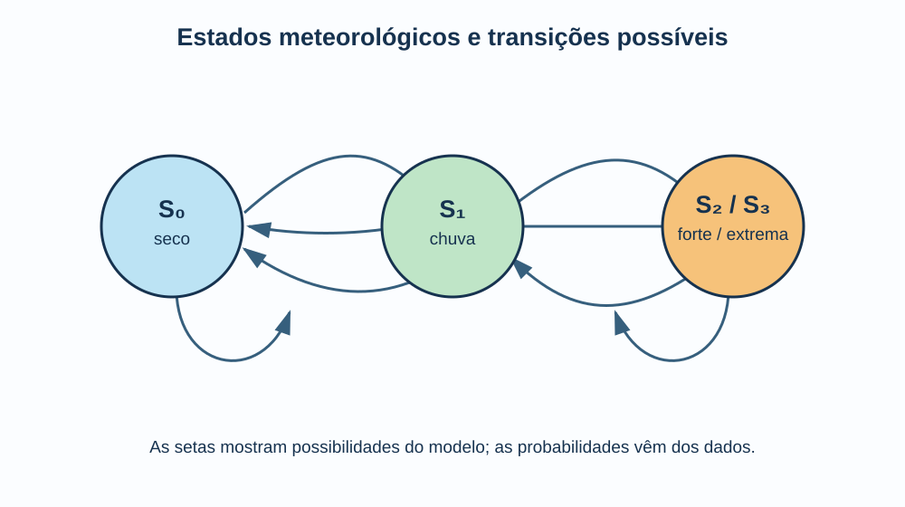
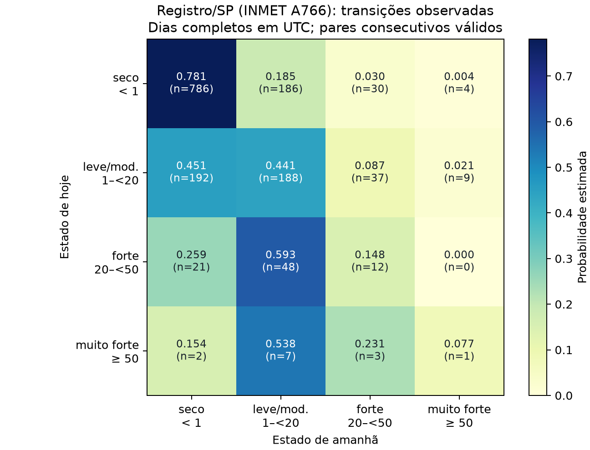

Objetivos
Ao final desta aula, devemos ser capazes de:
- distinguir tempo meteorológico de clima;
- representar uma sequência diária de chuva por estados discretos;
- interpretar e estimar uma matriz de transição de Markov;
- simular muitas trajetórias possíveis a partir de um modelo probabilístico;
- construir, no quadro, exemplos introdutórios de PageRank e de estimativa de \(\pi\);
- investigar persistência, frequência e duração de extremos;
- separar dados observados, parâmetros calculados e cenários hipotéticos.
Problema de pesquisa
Se hoje está chovendo, qual é a probabilidade de amanhã continuar chovendo? E, se repetirmos esse sorteio milhares de vezes, com que frequência aparecerão sequências longas de chuva forte?
Essas perguntas não procuram adivinhar exatamente o tempo de um dia futuro. Elas procuram descrever um regime probabilístico: sob determinadas condições e com determinadas probabilidades de transição, quais sequências de estados são plausíveis? Cadeias de Markov e simulação de Monte Carlo nos dão uma linguagem simples para começar essa investigação.
Dois aquecimentos para o quadro
Antes de olhar uma série meteorológica longa e um script em Python, vamos construir duas ideias à mão. O primeiro exemplo mostra como probabilidades de transição podem produzir um ranqueamento; o segundo mostra como sorteios repetidos podem estimar uma quantidade conhecida. Eles são pequenos o bastante para caber no quadro, mas contêm exatamente os ingredientes que usaremos depois com os dados de chuva.
Aquecimento 1: PageRank como caminhada de Markov
O PageRank é um exemplo histórico de análise de links na Web: representamos páginas por nós e hyperlinks por setas. Imagine um navegador que, ao chegar a uma página, escolhe aleatoriamente um dos links disponíveis. A página recebe uma pontuação alta quando esse navegante tende a visitá-la muitas vezes depois de muitos passos. Essa interpretação é uma cadeia de Markov.
Vamos desenhar apenas três páginas no quadro:
\[ A\rightarrow B,C,\qquad B\rightarrow C,\qquad C\rightarrow A. \]
Se a ordem dos estados é \((A,B,C)\), a matriz de transição é
\[ P= \begin{pmatrix} 0 & 1/2 & 1/2\\ 0 & 0 & 1\\ 1 & 0 & 0 \end{pmatrix}. \]
Começamos sem preferência, com \(r^{(0)}=(1/3,1/3,1/3)\), e usamos vetores-linha: \(r^{(t+1)}=r^{(t)}P\). A turma pode fazer as duas primeiras rodadas:
\[ r^{(1)}=(1/3,1/6,1/2),\qquad r^{(2)}=(1/2,1/6,1/3). \]
Ao repetir a atualização, chegamos a \(r=(0{,}4,0{,}2,0{,}4)\). Isto quer dizer que, neste grafo simplificado, o navegador passa aproximadamente 40% do tempo em \(A\), 20% em \(B\) e 40% em \(C\). Não é necessário calcular muitas linhas no quadro: o ponto é perceber que a importância “flui” pelos links e que o vetor estacionário resume o comportamento após muitos passos.
O PageRank real introduz detalhes adicionais, como a possibilidade de o navegador saltar para uma página aleatória, e sistemas modernos de busca usam muitos outros sinais além de links. Portanto, o exemplo não tenta reproduzir o ranqueamento atual de uma busca: ele ilustra a ideia de cadeia de Markov que tornou o PageRank tão instrutivo.

O trecho a partir de 25:00 é a referência para esta atividade. Podemos pausar depois da apresentação da rede e pedir que a turma execute uma atualização antes de ver a continuação.
Aquecimento 2: estimando \(\pi\) com Monte Carlo
Agora vamos usar aleatoriedade de outro modo.
Desenhamos no quadro um quadrado de lado 1 e, dentro
dele, um quarto de círculo de raio 1. Cada dupla gera
pares aleatórios \((x,y)\) com \(0\leq x,y\leq 1\) – pela
tecla Rand da calculadora, uma tabela de
números aleatórios ou um aplicativo simples – e marca
seus pontos no desenho.
Um ponto cai dentro do quarto de círculo quando
\[ x^2+y^2\leq 1. \]
Se \(N\) é o número total de pontos e \(M\) é o número de pontos internos, a razão das áreas fornece
\[ \frac{M}{N}\approx\frac{\pi}{4} \qquad\Longrightarrow\qquad \pi\approx4\frac{M}{N}. \]
Por exemplo, se a turma obtiver \(M=31\) pontos internos em \(N=40\) lançamentos, terá \(\pi\approx4(31/40)=3{,}10\). O número não precisa ser perfeito; pelo contrário, a diferença para \(\pi\) mostra a flutuação amostral. Ao juntar os pontos de toda a sala, \(N\) aumenta e a estimativa tende a estabilizar.
A ponte para a chuva
Os dois aquecimentos têm papéis diferentes. No PageRank, repetimos uma regra de transição para entender o estado de longo prazo; o cálculo pode ser feito deterministicamente por multiplicação de matrizes. Na estimativa de \(\pi\), fazemos muitos sorteios independentes e observamos uma frequência. No estudo meteorológico, combinaremos as duas ideias: a matriz de Markov especifica como escolher o próximo estado de chuva, e Monte Carlo repete essa caminhada milhares de vezes para investigar sequências inteiras.
Um caso que pede cuidado: Vale do Ribeira em setembro de 2026
O Vale do Ribeira é um contexto interessante porque combina umidade, influência oceânica, relevo e episódios de chuva persistente. Em 14 de setembro de 2026, o INMET informou acumulados parciais de 242,6 mm em Registro, 331,2 mm em Iguape e 248,2 mm em Barra do Turvo nos primeiros 14 dias do mês. A nota associa a instabilidade à passagem de uma frente fria no Atlântico e à entrada de ar frio sobre o centro-sul do Brasil.
Esses números são observações meteorológicas, não uma demonstração de causalidade climática. Um evento isolado não prova, por si só, que tenha sido causado pelas mudanças climáticas. Para discutir atribuição precisaríamos de séries históricas, sazonalidade, variabilidade natural, condições oceânicas, modelos climáticos e comparações entre cenários. Aqui, o episódio serve como motivação para estudar a ocorrência e a persistência de estados de chuva.

Tempo não é clima
O tempo meteorológico descreve o estado da atmosfera em uma escala curta: chuva hoje, temperatura amanhã, vento durante uma tarde. O clima é o comportamento estatístico observado em períodos longos: médias, variabilidade, frequências, extremos e tendências.
Uma cadeia de Markov diária pode ser um modelo de tempo. A comparação cuidadosa de matrizes estimadas em diferentes décadas, estações ou cenários pode contribuir para perguntas sobre clima. Os dois níveis se relacionam, mas não são sinônimos: uma sequência chuvosa é tempo; uma alteração persistente na distribuição de sequências é uma questão climática.
Da chuva medida ao estado do sistema
Vamos começar com uma classificação didática da precipitação diária. Os limites abaixo são escolhas metodológicas; em uma pesquisa, podemos justificá-los por literatura, percentis ou pela distribuição dos próprios dados.
| Estado | Nome | Precipitação diária |
|---|---|---|
| \(S_0\) | seco | menor que 1 mm |
| \(S_1\) | chuva leve a moderada | de 1 a menor que 20 mm |
| \(S_2\) | chuva forte | de 20 a menor que 50 mm |
| \(S_3\) | chuva muito forte | 50 mm ou mais |
Por exemplo, a sequência de valores
\[ 0,\ 0,\ 3{,}2,\ 18{,}4,\ 57{,}8,\ 12{,}1,\ 0\ \text{mm} \]
vira a sequência de estados
\[ S_0,\ S_0,\ S_1,\ S_1,\ S_3,\ S_1,\ S_0. \]
Essa simplificação perde detalhes sobre o volume exato de cada chuva, mas torna visível uma pergunta essencial: como um estado tende a ser seguido por outro?
Cadeia de Markov
Uma cadeia de Markov é um modelo para uma sequência que muda de estado: hoje seco, amanhã chuva leve, depois chuva forte, por exemplo. A palavra cadeia não significa que os resultados sejam determinados; ela indica que cada estado está ligado ao próximo por probabilidades. No modelo de primeira ordem, a distribuição do próximo estado depende do estado atual:
\[ P(X_{t+1}\mid X_t,X_{t-1},\ldots,X_0)=P(X_{t+1}\mid X_t). \]
Isso não quer dizer que a atmosfera realmente não tenha memória física. Quer dizer que nosso modelo resume a informação usada no instante \(t\) ao estado atual. É uma aproximação que deve ser verificada e, se necessário, ampliada com estação do ano, temperatura, umidade ou estados de ordem maior.
Contexto histórico: dependência sem independência
O matemático russo Andrei A. Markov publicou, em 1906, trabalhos que mostravam algo importante para a probabilidade: ainda podemos obter regularidades estatísticas quando as observações sucessivas não são independentes. A questão era justamente entender sequências em que o resultado seguinte guarda alguma relação com o anterior. Mais tarde, Markov analisou sucessões de vogais e consoantes em Eugene Onegin, de Pushkin, como uma cadeia de símbolos.
Essa origem ajuda a evitar uma confusão comum. Uma cadeia de Markov não é uma previsão mágica e nem exige que o sistema seja aleatório “sem regra”. Ela é uma forma de representar dependência probabilística com uma memória resumida. No nosso caso, trocamos letras por classes de chuva e perguntamos como a classe de hoje se relaciona com a de amanhã.

A matriz de transição
Se \(N_{ij}\) é o número de dias em que observamos a passagem de \(S_i\) para \(S_j\), estimamos
\[ \hat p_{ij}=\frac{N_{ij}}{\sum_j N_{ij}}. \]
Cada linha da matriz deve somar 1, pois ela lista todos os destinos possíveis a partir de um mesmo estado. Linhas são estados de hoje; colunas, estados de amanhã, sempre na ordem \(S_0,S_1,S_2,S_3\). Um valor grande na diagonal mede a persistência de um dia para o seguinte.
Estudo de caso com dados observados: Registro/SP
Fonte, local e intervalo temporal
O exemplo usa dados observados, não uma previsão nem uma série inventada: são leituras horárias da estação meteorológica automática INMET A766 – Registro/SP (latitude \(-24{,}5331^\circ\), longitude \(-47{,}8642^\circ\), altitude 35 m). O INMET disponibiliza os arquivos históricos; para facilitar a leitura e manter os metadados de controle de qualidade, usamos a cópia harmonizada METBRA25Y, cuja procedência aponta de volta aos arquivos públicos do INMET.
A série horária recebida cobre 09/02/2017 a 31/08/2025, em UTC. Nem toda hora contém uma medida de precipitação: há períodos sem leitura. Para não inventar chuva onde o sensor não registrou, mantivemos somente dias UTC com as 24 leituras horárias válidas e não negativas. Isso deixou 1.660 dias completos, no intervalo efetivamente analisado de 11/02/2017 a 23/10/2024, e 1.526 pares de dias consecutivos para estimar transições. Lacunas interrompem a contagem: um dia antes e outro depois de uma lacuna não são tratados como dias vizinhos.
Os dados brutos, o CSV diário derivado e o script que
produz todos os números estão em data/ e
scripts/analisar_registro.py. A variável é
a precipitação horária em milímetros; o acumulado diário
é a soma das 24 horas UTC. Esta escolha de dia UTC deve
ser declarada: para uma análise operacional local,
poderíamos deslocar o dia para BRT e repetir o
cálculo.
Como os dados viraram matriz e gráfico
O processamento foi deliberadamente simples e rastreável.
- Lemos a coluna
PRECIPITATION_MM, descartando leitura ausente ou negativa. - Para cada data UTC, exigimos 24 valores horários e somamos esses valores para obter a chuva diária.
- Classificamos cada total diário em \(S_0\), \(S_1\), \(S_2\) ou \(S_3\) com os limiares definidos no início da aula.
- Para cada par de dias realmente consecutivos, contamos a passagem \(S_i\rightarrow S_j\); essa é a contagem \(N_{ij}\).
- Dividimos cada linha por seu total. Assim, a linha passa a responder “dado o estado de hoje, como se repartiram os estados de amanhã?”
O mapa de calor abaixo mostra o
resultado dessa divisão: cor mais escura significa
probabilidade estimada maior; n= é o número
bruto de passagens que sustentou cada célula. Portanto,
o gráfico não mostra chuva futura; ele resume a
frequência de transições no recorte observado.
Com os mesmos quatro limiares da tabela anterior, as probabilidades estimadas foram:
\[ \hat P= \begin{pmatrix} 0{,}781 & 0{,}185 & 0{,}030 & 0{,}004\\ 0{,}451 & 0{,}441 & 0{,}087 & 0{,}021\\ 0{,}259 & 0{,}593 & 0{,}148 & 0{,}000\\ 0{,}154 & 0{,}538 & 0{,}231 & 0{,}077 \end{pmatrix}. \]
As linhas \(S_0,S_1,S_2,S_3\) tiveram, respectivamente, 1.006, 426, 81 e 13 transições disponíveis. As contagens de cada célula aparecem na figura.

O zero em \(P(S_3\mid S_2)\) não prova que essa passagem seja impossível na atmosfera: nesta amostra ela apenas não ocorreu nas 81 transições que começaram em \(S_2\). A última linha também tem somente 13 transições. Por isso, os números de extremos precisam ser lidos junto com seus tamanhos amostrais.
Exemplo resolvido: uma atualização de um dia observado
Suponhamos que hoje seja classificado como \(S_2\), chuva forte. A terceira linha estimada com Registro fornece diretamente:
\[ \begin{aligned} P(S_0\mid S_2)&=0{,}259, & P(S_1\mid S_2)&=0{,}593,\\ P(S_2\mid S_2)&=0{,}148, & P(S_3\mid S_2)&=0{,}000. \end{aligned} \]
Para simular amanhã, sorteamos um número uniforme \(u\) entre 0 e 1. Se \(u=0{,}71\), ele cai no intervalo acumulado de 0,259 a 0,852 e o próximo estado será \(S_1\). Repetimos o procedimento usando agora a linha de \(S_1\). A cada passo há sorteio, mas as probabilidades usadas dependem do estado presente.
Monte Carlo: muitas histórias possíveis
Uma simulação de Monte Carlo usa sorteios repetidos para explorar as consequências numéricas de um modelo. Em vez de tentar escolher “a” trajetória correta, geramos muitas trajetórias possíveis e contamos seus resultados. Aqui, cada sorteio escolhe o estado de amanhã de acordo com a linha correspondente da matriz de Markov. Uma única trajetória simulada é só uma possibilidade; o conjunto delas permite estimar frequências e intervalos. Se simularmos 20 mil anos sintéticos de 365 dias, podemos estimar, dentro deste modelo:
- a fração de dias em \(S_3\);
- o número anual de dias com chuva forte ou muito forte;
- a probabilidade de ocorrer uma sequência com pelo menos três dias \(S_2\) ou \(S_3\);
- a maior duração anual de uma sequência chuvosa;
- a distribuição do acumulado, se cada estado também receber uma regra para volumes de chuva.
Contexto histórico: por que o nome Monte Carlo?
O nome remete ao famoso cassino de Monte Carlo, em Mônaco, porque o método explora sorteios como os jogos de azar, mas com uma finalidade científica. A forma moderna do método foi desenvolvida no contexto de problemas físicos difíceis no Laboratório de Los Alamos, nos anos 1940, por pesquisadores como Stanisław Ulam, John von Neumann e Nicholas Metropolis. O artigo de Metropolis e Ulam de 1949 consolidou o nome e apresentou o método como uma abordagem estatística para problemas de física matemática.
Há uma ligação bonita entre os dois temas da aula: uma cadeia de Markov fornece as probabilidades de cada próximo passo; Monte Carlo usa números pseudoaleatórios para percorrer repetidamente essa cadeia. Isso não deve ser confundido com o método Markov chain Monte Carlo (MCMC) usado para amostrar distribuições complexas em estatística: nesta aula estamos simulando diretamente uma cadeia estimada de chuva.
Para tornar o resultado auditável, executamos
20.000 trajetórias de 365 dias com a
matriz observada, distribuição inicial empírica e
semente 20260923. Em cada trajetória,
sorteamos o primeiro estado de acordo com a frequência
observada e, nos 364 passos seguintes, sorteamos o
próximo estado usando a linha da matriz correspondente
ao estado corrente. Depois contamos dias \(S_2\) ou \(S_3\), sequências extremas
e durações. Neste experimento, a média foi 23,17
dias/ano em \(S_2\) ou \(S_3\) (intervalo percentil
5–95: 15 a 32) e
41,22% das trajetórias tiveram ao menos
uma sequência de três ou mais dias consecutivos em \(S_2\) ou \(S_3\).

O ponto importante é que Monte Carlo não produz uma profecia. Ele aproxima as consequências de hipóteses explicitadas no modelo. Se a matriz, a classificação dos estados ou o período usado forem inadequados, as trajetórias simuladas também serão inadequadas.
Persistência e extremos
Definimos, por exemplo, uma sequência extrema como uma sequência de pelo menos três dias consecutivos em \(S_2\) ou \(S_3\). Para cada trajetória, contamos quantas sequências apareceram e qual foi a maior duração. A proporção de trajetórias que contêm ao menos uma sequência extrema estima a probabilidade desse evento sob a matriz escolhida.
É diferente de dizer que um episódio real foi causado pelo modelo, ou que uma simulação representa uma previsão determinística. A distinção entre observação, cálculo e cenário é parte do resultado científico, não uma nota de rodapé.
Do dado real à matriz: roteiro reproduzível
O estudo de caso anterior executa o fluxo abaixo. Ele
pode ser repetido com
MPLCONFIGDIR=/tmp/matplotlib python3 scripts/analisar_registro.py,
a partir de Aula-3/.
- Obter os dados de precipitação do INMET ou do CEMADEN e registrar a estação, período e unidade.
- Verificar dados ausentes, duplicados, valores impossíveis e mudanças de instrumento.
- Agregar os registros para precipitação diária sem somar intervalos sobrepostos.
- Classificar cada dia em \(S_0\) a \(S_3\) e contar as transições consecutivas.
- Normalizar cada linha da contagem para estimar a matriz.
- Simular trajetórias, calcular métricas e comunicar a incerteza.
- Comparar períodos equivalentes do calendário, sem misturar estações do ano de forma indiscriminada.
O INMET disponibiliza dados históricos e o CEMADEN mantém pluviômetros automáticos na região. Antes de qualquer conclusão, devemos documentar a origem do dado e todas as escolhas de tratamento. Nesta aula, a cópia local inclui o arquivo horário selecionado e seu SHA-256, para que o resultado não dependa de uma planilha invisível.
Mudanças climáticas: como a pergunta muda
Uma aplicação possível é estimar uma matriz para um período histórico e construir cenários em que certas transições ficam mais ou menos prováveis. Por exemplo, aumentar hipoteticamente \(P(S_3\mid S_2)\) e reduzir outro elemento da mesma linha para preservar a soma 1. A simulação então responde: como mudariam as sequências extremas se o regime de transição fosse esse?
Isso é útil como experimento conceitual, mas não equivale a uma projeção climática completa. A matriz pode mudar com a estação, com teleconexões como El Niño/La Niña, com variáveis atmosféricas não incluídas e com tendências de longo prazo. Uma extensão é usar matrizes diferentes para verão e inverno, ou tornar as probabilidades funções do tempo e de covariáveis.
Limitações que precisamos declarar
- A escolha dos limiares para \(S_0\) a \(S_3\) afeta a matriz e os resultados.
- Eventos muito raros geram poucas transições observadas; uma probabilidade estimada como zero pode ser apenas ausência de dados.
- Uma cadeia de primeira ordem pode ser curta demais para representar persistência real.
- Dias consecutivos e estações do ano não são observações independentes.
- Uma matriz estimada no passado não é automaticamente válida no futuro.
Esses limites não invalidam o método. Eles indicam quais perguntas ele responde bem e quais exigem dados, modelos ou variáveis adicionais.
Conclusões: o que aprendemos e por que importa
Podemos tirar quatro conclusões deste estudo de caso.
- Na amostra disponível, dias secos foram persistentes: \(P(S_0\mid S_0)=0{,}781\). Isso descreve o recorte de dados tratado; não significa que “sempre” ficará seco.
- A transição mais provável após uma chuva forte (\(S_2\)) foi para chuva leve ou moderada (\(S_1\)), com 0,593. Mas essa linha tem 81 casos, muito menos que a linha de dias secos, e deve ser interpretada com mais cautela.
- Simulações de Monte Carlo transformam a matriz em perguntas sobre sequências inteiras. O resultado de 41,22% é uma probabilidade condicional ao modelo e ao período usado, não a probabilidade real e imutável para qualquer ano futuro.
- O método torna claras as escolhas que frequentemente ficam escondidas: o que chamamos de “dia”, quais limiares definem chuva forte, como tratamos lacunas e qual período alimenta o modelo.
A importância desses modelos está justamente nessa combinação de simplicidade e transparência. Cadeias de Markov ajudam a organizar dependências em dados sequenciais; Monte Carlo traduz essas dependências em cenários, frequências e faixas de variação. Eles são úteis em meteorologia, física estatística, filas, confiabilidade, finanças e muitos outros sistemas em que não basta olhar valores isolados. Ao mesmo tempo, seu valor científico depende de dados bem documentados, hipóteses explícitas e comparação cuidadosa com observações. Previsão, explicação causal e projeção climática são tarefas mais exigentes; este modelo é uma ferramenta para investigar e comunicar incerteza, não para substituí-las.
Imagens e dados de uso livre
As figuras em images/ foram elaboradas
para este material. O diagrama inicial é didático; a
matriz e o histograma de Monte Carlo foram gerados pelo
script da aula a partir da série observada documentada
em data/. As trajetórias de Monte Carlo
continuam sendo cenários simulados, não observações nem
previsão.
Vídeos recomendados
O vídeo apresenta estados, transições e a propriedade de Markov com um exemplo ligado ao tempo. Pode ser assistido depois da primeira leitura da matriz.
Esta indicação ajuda a visualizar por que muitas repetições aleatórias podem estimar frequências e distribuições, sem transformar a simulação em certeza.
Questões de revisão e reflexão
- Por que uma sequência de chuva diária pode ser representada por estados discretos?
- O que a propriedade de Markov assume sobre a informação usada para o próximo passo?
- Por que cada linha de uma matriz de transição deve somar 1?
- Como interpretar um elemento diagonal grande na matriz?
- Qual é a diferença entre uma trajetória simulada e uma previsão meteorológica?
- Por que a ocorrência de um evento extremo isolado não prova atribuição às mudanças climáticas?
- Que problemas podem surgir ao estimar uma transição rara com poucos dados?
- Como você compararia dois períodos sem confundir sazonalidade com mudança climática?
Referências
INSTITUTO NACIONAL DE METEOROLOGIA (INMET). São Paulo registra recordes de chuva nos primeiros 14 dias de setembro. Brasília, 14 set. 2026. Notícia no portal do INMET. Acesso em: 23 set. 2026.
INSTITUTO NACIONAL DE METEOROLOGIA (INMET). Dados históricos. Portal de dados. Acesso em: 23 set. 2026.
CASTRO, Matheus Lima; VICHETE, William Dantas;
LUSQUINO FILHO, Leopoldo. METBRA25Y: Brazil
Surface Meteorology Archive with Harmonized Variables
and Quality Control. Zenodo, versão 1.0.0,
2026. DOI: 10.5281/zenodo.19964979.
Série usada:
INMET_REGISTRO_SP_2000-01-01_2025-12-31.csv.gz.
MARKOV, Andrei A. Extension of the law of large numbers to dependent quantities. 1906. Contexto histórico consultado em Encyclopedia of Mathematics, verbete sobre Markov.
METROPOLIS, Nicholas; ULAM, Stanislaw. The Monte Carlo Method. Journal of the American Statistical Association, v. 44, n. 247, p. 335–341, 1949. DOI: 10.1080/01621459.1949.10483310.
BRIN, Sergey; PAGE, Lawrence. The Anatomy of a Large-Scale Hypertextual Web Search Engine. Computer Networks, v. 30, p. 107–117, 1998. Versão no Google Research. Para o contexto atual, consulte também os sistemas de ranqueamento do Google.
INSTITUTO DE MATEMÁTICA PURA E APLICADA (IMPA). PAPMEM – Janeiro de 2013: Sistemas lineares. YouTube. Trecho indicado: 25:00. Vídeo.
CENTRO NACIONAL DE MONITORAMENTO E ALERTAS DE DESASTRES NATURAIS (CEMADEN). Mapa interativo e consulta pluviométrica. Portal do CEMADEN. Acesso em: 23 set. 2026.
NORRIS, J. R. Markov chains. Cambridge: Cambridge University Press, 1997.
ROSS, Sheldon M. Introduction to probability models. 12. ed. Amsterdam: Academic Press, 2019.